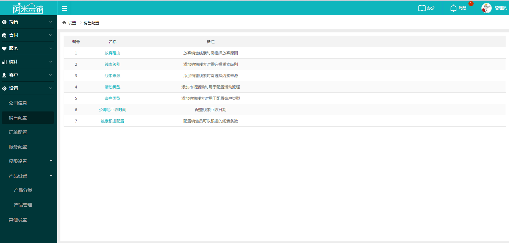
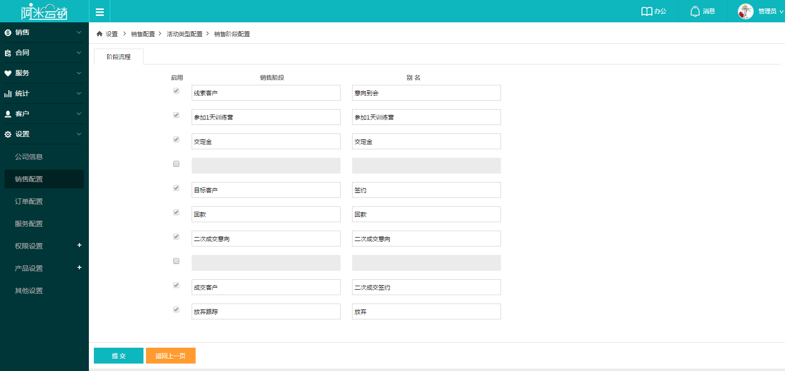
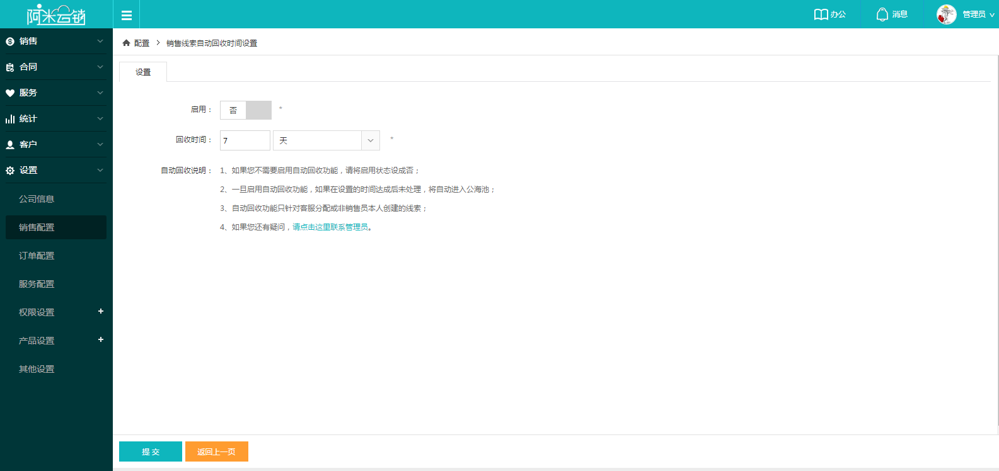
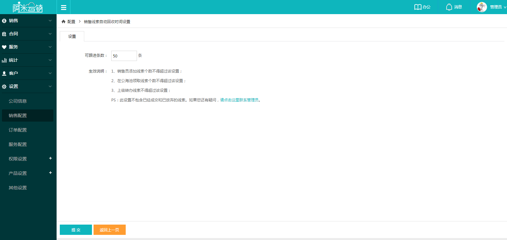

自定义销售过程中需要用到的信息，包括放弃理由、线索级别、线索来源、市场活动类型、客户类型、公海池回收时间和线索跟进配置，配置完成后，在新增、放弃销售线索、新增客户时及市场活动时可选择已配置好的信息。
1活动类型：开放式的市场活动配置，针对不同类型的市场活动，可以自定义线索级别和层级。
2公海池回收时间：开启设置时间后，销售员正在跟进的销售线索，多久没有跟进，系统会自动认为放弃跟进，线索流入公海池，可由其他销售人员领取继续跟进。
3线索跟进配置：设置系统中同一个销售员可以同时跟进的客户线索数量，系统默认为50个，当达到50个后，则无法继续新增线索，无法在公海池领取线索，如果数量满了，公海池中或有新的可以成单的线索，则需要放弃现有的线索后才可领取。防止销售员占着线索信息而不能全部跟进，提升线索跟进效率，增加成单率。
